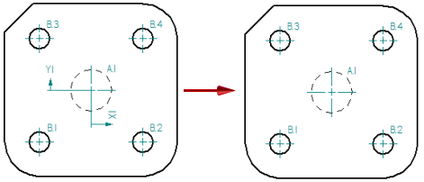
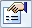

Hide the hole table origin
Although a hole table origin is required to define hole locations in the hole table, you may not want to see the origin annotation displayed on the drawing. You can hide the hole table annotation in the current drawing view, and set this as the default for future hole tables.

-
Click the hole table associated with the drawing view.
-
On the Hole Table command bar, click Properties

. -
In the Hole Table Properties dialog box, do the following:
-
On the Options tab, deselect the Show origin on drawing check box.
-
Click Apply to update the drawing view.
-
On the General tab, In the Saved settings box, type a unique name for this hole table format, and then click Save.
-
Click OK to close the dialog box.
-
To create a new hole table using your custom hole table formatting, select the setting name from the Saved Settings list on the Hole Table command bar before you click to place the new hole table.
How do I
Create a hole tableChange hole table labels
Define a smart hole table callout column
Show hole size tolerance
Learn more
Hole tablesAdding hole table columns
Look up more details
Hole Table commandHole Table command bar
Hole Table Properties dialog box
Options tab (Hole Table Properties dialog box)
Hole Number tab (Hole Table Properties dialog box)
Callout tab
Smart Depth tab
Units tab (Hole Table Properties dialog box)